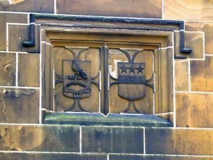

Towneley from A to Z

Towneley from A to Z
A coat of arms is a heraldic visual design on a shield. Coats of arms in England are regulated and granted to individuals by the College of Arms.
The Towneley arms are three black stars with five points (called mullets) above a black bar (called a fess) covering one third of the shield on a white background.
The coat of arms on a shield forms the central element of the full heraldic achievement which in its whole consists of shield, supporters, crest, and motto. The Towneley family were never granted supporters.
In heraldry a crest was historically a device which surmounted a knight's helmet. In practice it was more often seen in the form of a badge worn on the caps of a knight's retainers. The Towneley crest is a sparrow Hawk sitting on a stump with a red riband. Each family's crest should be unique and, as many families have used a sparrowhawk as a device, the Towneley distinction is the riband and the stump.
The Towneley motto is Tenez Le Vraye - Hold to the Truth.
The coat of arms, crest and motto can all be seen above the porch entrance. They can also be seen in the portrait of John and Mary Towneley and Family . This portrait also shows the coat of arms of other families related by marriage.
It was common for the arms of a married couple to be displayed on one shield with the husband's arms on the left and that of the wife's family on the right. The joint arms of William Towneley and Cecilia Standish can be seen on the fireplace in the Family Dining Room.
If the wife's family have no male descendants, she is known as a heraldic heiress and her children inherit her coat of arms. Over the years one family could collect many coats of arms in this way. These may be shown all together in one shield, each part is called a quartering. The Towneley family acquired 17 additional coats of arms, see the Towneley_quarterings displayed over the main entrance in the Great Hall .